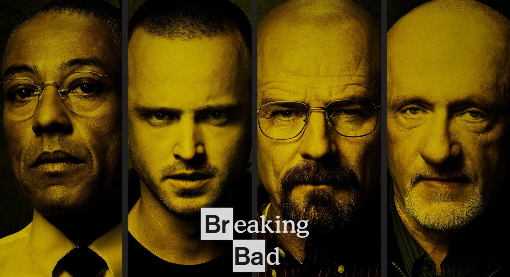

«Breaking Bad» ( «Пуститися берегаі») - телесеріал, створений американським продюсером Вінсом Гіліганом - творцем, який прославився в Україні серіалом «X-files». Сюжет серіалу про хіміка Уолтере Уайта, який хворий на рак та займається синтезом метамфетаміну для забезпечення майбутньої сім'ї.
Перехід на наступну сторінку